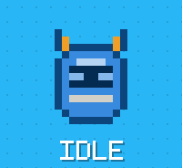
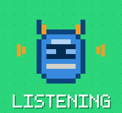
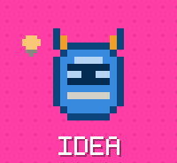
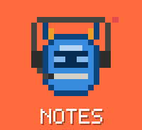
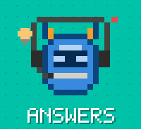
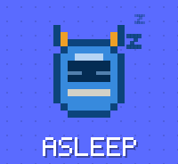

A pixel desktop pet & AI assistant for your Mac
Zolt floats on your desktop, listens when you call, talks back in a glorious 80s robot voice, does things on your Mac with your OK, and takes your meeting notes.
macOS 26+ · Apple Silicon & Intel · Open source (MIT) · Brain: Claude Code

What Zolt can do
🎙️ Talk to it
Click Zolt or press ⌃⌥Space, say what you need, and it answers in a speech bubble that scrolls along as it talks.
📼 80s robot voice
Replies read aloud in classic Mac voices: Zarvox, Trinoids, Fred, Ralph. Or switch the voice off.
🛠️ Does things on your Mac
"Remind me to call Mom at 6", "set volume to 30%", "open Spotify". Every action asks Allow or Deny first.
👀 Looks at your screen
"Look at my LinkedIn. What would you improve?" One screenshot, only when you ask.
📝 Meeting notes
Notices Teams, Zoom or Google Meet calls and asks before taking notes. You get a live transcript, then a TL;DR, decisions and action items.
💡 Suggested answers
Optional: when someone asks you a question on a call, a suggested answer quietly appears in your notes window.
It has moods






Meet Zamil 🇸🇦

Zamil (زميل) means companion in Arabic. It's Zolt's sibling: it wears a red-and-white shemagh, understands spoken Arabic and replies in Arabic.
It runs side by side with Zolt, with its own hotkey (⌃⌥Z). Download Zamil.zip from the same release.
Install in 3 steps
- Give it a brain. Install Claude Code, then run
claudeonce to sign in. You'll need a paid Claude account, as the free plan doesn't include Claude Code:curl -fsSL https://claude.ai/install.sh | bash - Download Zolt (or Zamil) from the latest release, unzip it, and drag it into Applications.
- First launch: macOS blocks unsigned apps once. Open System Settings → Privacy & Security → Open Anyway. Then click Zolt and say hi.
Prefer to build it yourself? git clone https://github.com/c0ldskin/zolt-bot.git && cd zolt-bot && ./build.sh --run
Safe by design
- 🎙️ The mic is on only while Zolt is listening (you clicked it) or taking notes (you said yes).
- ✋ Every action and web search shows an Allow / Deny dialog with the full command. Deny is the default.
- 🔐 Secrets stay locked: Zolt refuses to read SSH keys, Keychains, browser data, password managers and
.envfiles, and refuses commands that name them. - 📝 Never starts meeting notes by itself, and reminds you to tell people they're being transcribed.